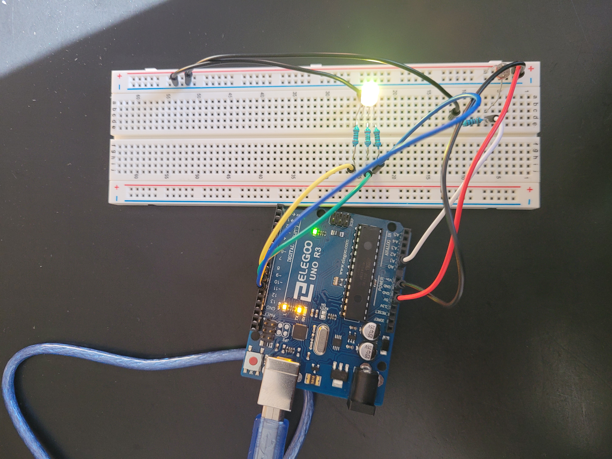
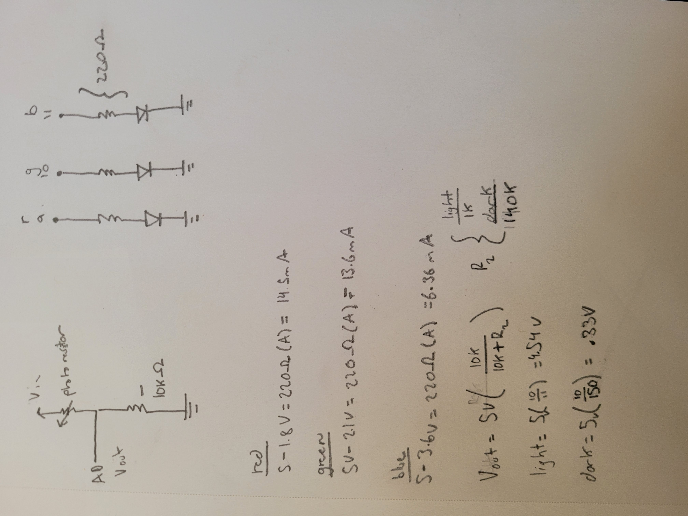

Shivank's Assignment 3!
For this assignment, I created a circuit that fades between red and green depending on the light level. Green is dark and red is light! During the calibration phase, the LED shines blue.

Image of the circuit.

Image of the schematic and calculations. I set the LED resistors to 220 Ohms to keep the mA within an acceptable of 1mA to 30mA according to the LED datasheet. I also added a 10K resistor to the voltage divider photoresistor schematic to have the voltage divide at an appropriate range. If the resistor was too small, the changes in voltage from dark to light is less noticable because as measured, the photoresistor measures around 1K Ohms in the light and 140K Ohms in the dark. I did calculations for approximate values for max light and max dark.
This is the code...
int redPin = 9; // defines red pin as 9
int greenPin = 10; // defines green as 10
int bluePin = 11; // defines blue pin as 11
int analogPin = A0; // defines input pin as A0;
int sensorValue = 0; // initial sensor value
int outputValue = 0; // initial output value
int sensorMin = 0; // initial sensor min for calibration
int sensorMax = 1023; // initial sensor max for calibration
void setup() {
pinMode(analogPin, INPUT); // sets input pin
pinMode(redPin, OUTPUT); // sets red pin as output
pinMode(bluePin, OUTPUT); // sets blue pin as output
pinMode(greenPin, OUTPUT); // sets green pin as output
Serial.begin(9600); // initializes Serial to read values.
digitalWrite(bluePin, HIGH); // first turns on the blue lught to signal calibration phase.
while (millis() < 5000) { // for 5 seconds, do this...
sensorValue = analogRead(analogPin); // reads the sensor value (the light source.)
// record the maximum sensor value
if (sensorValue > sensorMax) { // if the current sensor value is greater than the maximum...
sensorMax = sensorValue; // set the maximum equal to the current sensor value.
}
// record the minimum sensor value
if (sensorValue < sensorMin) { // if the current sensor value is less than the minimum...
sensorMin = sensorValue; // set the minimum equal to the current sensor value.
}
}
// after calibration, we now have sensor min and max stored in variables.
digitalWrite(bluePin, LOW); // turns the blue pin off to signal the end of the calibration phase.
}
void loop() {
sensorValue = analogRead(analogPin); // reads the current sensor value and stores it.
sensorValue = constrain(sensorValue, sensorMin, sensorMax); // if the sensor value is less than the min,
// or greater than the max, it returns the existing Min and Max stored from calibration.
sensorValue = map(sensorValue, sensorMin, sensorMax, 0, 255); // maps the sensor value between 0 and 255 given the defined Min and Max.
Serial.println(sensorValue); // prints out the sensor value
analogWrite(greenPin, 255 - sensorValue); // if the cell is in dark, it is more green.
analogWrite(redPin, sensorValue); // if the cell is in the light, it is more red.
delay(5); // Wait for 5 millisecond(s)
}
This is the I/O in practice!!